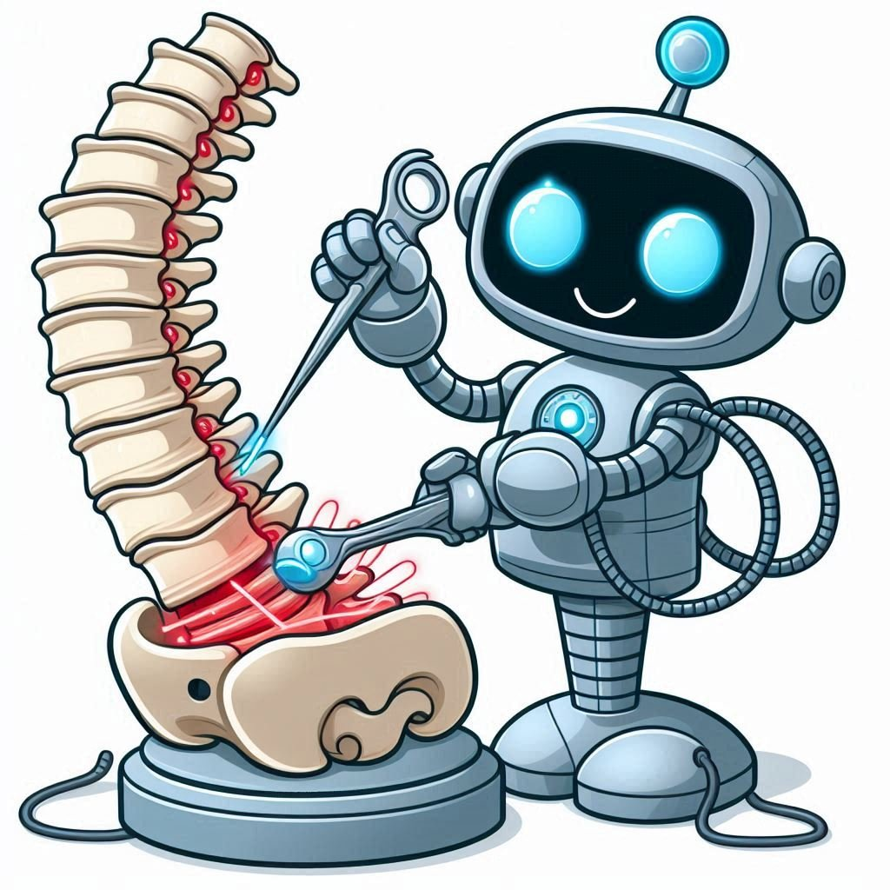

Ce este chirurgia ortopedică asistată de robot?
Chirurgia ortopedică asistată de robot utilizează tehnologia avansată pentru a efectua intervenții precise asupra articulațiilor și oaselor. Această metodă minim invazivă îmbunătățește rezultatele și reduce timpul de recuperare, ajutând la corectarea afecțiunilor ortopedice, cum ar fi înlocuirea articulațiilor și repararea fracturilor complexe.
Intervențiile chirurgicale asistate de robot sunt folosite în special pentru:
- Înlocuirea articulațiilor (genunchi, șold)
- Repararea fracturilor osoase
- Corectarea deformităților osoase
- Tratamentul scoliozei și altor afecțiuni ale coloanei vertebrale
De ce aș putea avea nevoie de o intervenție chirurgicală ortopedică asistată de robot?
Chirurgia ortopedică asistată de robot este recomandată pentru persoanele care suferă de afecțiuni ortopedice grave și care necesită intervenții precise pentru îmbunătățirea mobilității și funcționalității. Această tehnologie poate reduce riscurile și accelera procesul de recuperare.
Care sunt riscurile operației ortopedice asistate de robot?
Chirurgia ortopedică asistată de robot prezintă mai puține riscuri decât intervențiile tradiționale, dar poate exista posibilitatea unor complicații minore:
- Infecții la nivelul zonei operate
- Hematom sau sângerare
- Probleme cu mișcarea articulației
- Complicații legate de anestezie
Ce se întâmplă în timpul operației ortopedice asistate de robot?
În timpul operației ortopedice asistate de robot, pacientul va fi anesteziat complet pentru a asigura confortul total. Chirurgul va controla un sistem robotic avansat, care ghidează instrumentele cu precizie milimetrică. Această tehnologie permite realizarea unor incizii mai mici, reducând trauma tisulară și riscul de complicații. Brațele robotice oferă o stabilitate superioară, asigurând alinierea corectă a implanturilor sau corectarea precisă a oaselor afectate. Procedura minim invazivă contribuie la o recuperare mai rapidă, cu mai puțină durere și o mobilizare timpurie a pacientului.